The Story of Kings Harbour Whiskey
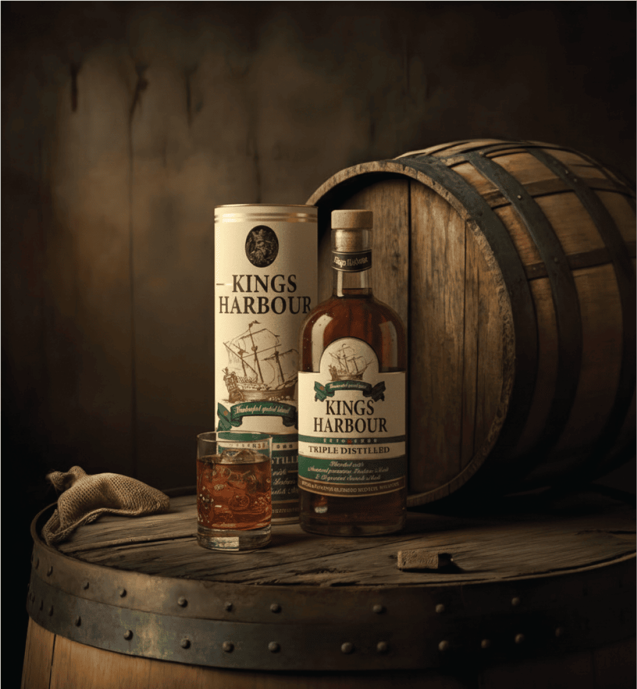
Born along Britain's storied shores, King's Harbour Whiskey pays tribute to the spirit of
craftsmanship that once thrived by the docks. Inspired by the 19th Century coastal trade, where
explorers left with oak, spices, and spirit, and journeyed across the seas, it carries within
each sip the quiet legacy of tides and time. Matured by the mist and mellowed by the sea salt
breeze, it’s a Whiskey that's a harmonious blend of strength and sophistication — smooth,
full-bodied, and best enjoyed neat. A tribute to the harbours that once welcomed royal fleets
and fine cargo, King's Harbour stands today as a symbol of timeless refinement, crafted for
those who appreciate the spirit of royalty in every pour.
King's Harbour Whiskey is a celebration of timeless craftsmanship and bold character. Aged to
perfection and blended with precision, it embodies true refinement. Smooth enough to be enjoyed
neat, and regal enough to honour every occasion.
Ingredients
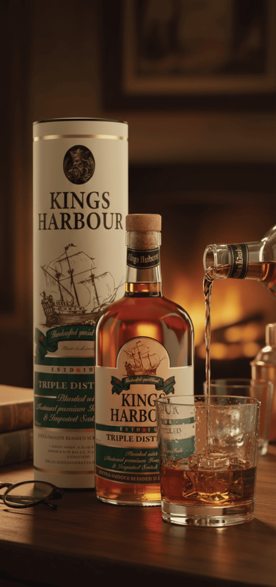
Imported Scotch: Aged in Oak Barrels & peated to create a
distinctive smokey taste to achieve the characteristic and consistent King's Harbour
taste profile.
Indian Matured Malts: Carefully selected aged malt whiskies that
contributes to a rich blend and complex flavor notes.
Extra Neutral Alcohol: Triple distilled Indian grain spirit,
high-quality, clear alcohol added to achieve the desired balance.
Contains Permitted Flavours: Specific Scotch flavor & Caramel
compounds are added to enhance the taste in the final blend.
Demineralized Water: Purified water, essential for balancing the
alcohol strength and ensuring the final product's clarity and smoothness.
The Story of Royal Harbour Gin
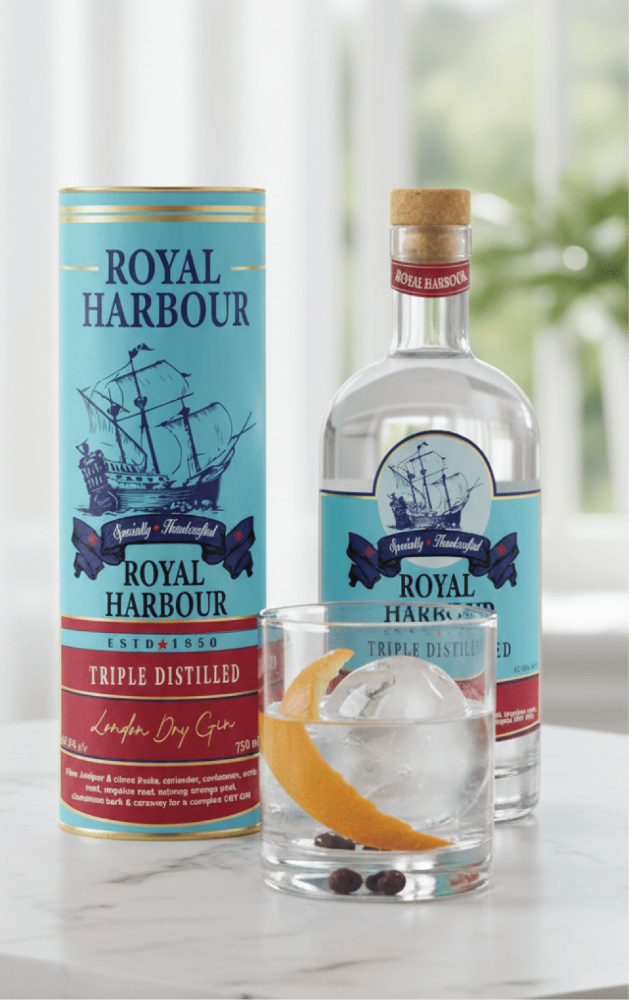
Inspired by Britain's maritime heritage, Royal Harbour Gin is a tribute to the sea — where
adventure met artistry, and discovery met distinction. Crafted along the coast where botanicals
once arrived on merchant ships from faraway lands, it carries the freshness of the ocean breeze
and the spirit of exploration in every note. Distilled with precision and produced to
perfection, it captures a crisp, refined character that can be enjoyed neat or in the heart of a
classic cocktail.
A nod to the harbours that once welcomed royalty and travellers alike, Royal Harbour embodies
effortless elegance—a spirit that celebrates those who navigate life with grace, purpose, and a
taste for timeless sophistication.
The Botanicals
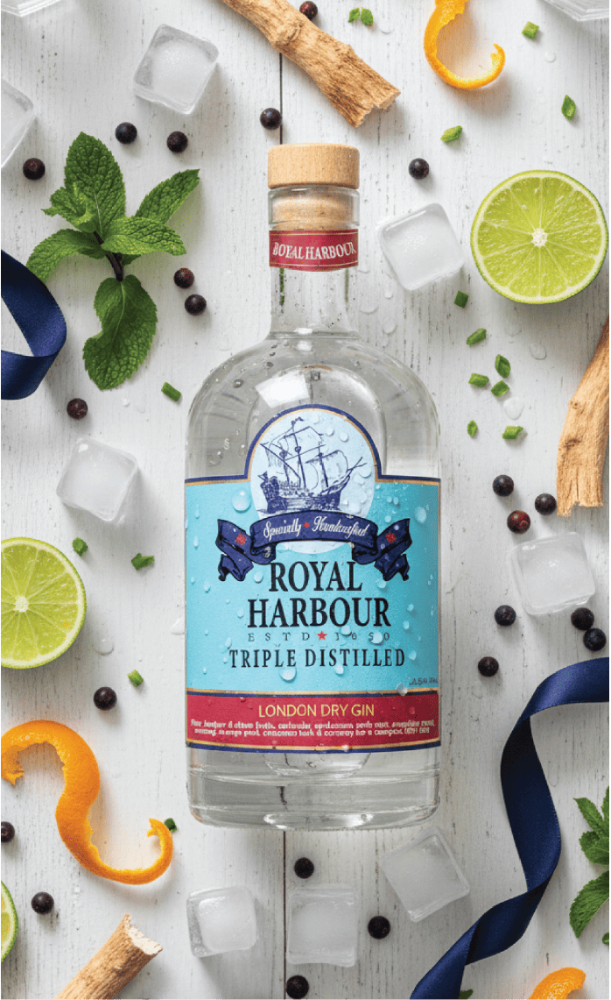
Fine Juniper & Citrus Fruits
The foundational botanical, providing the classic piney, crisp flavor that defines a
true Gin, complemented by bright, refreshing citrus notes.
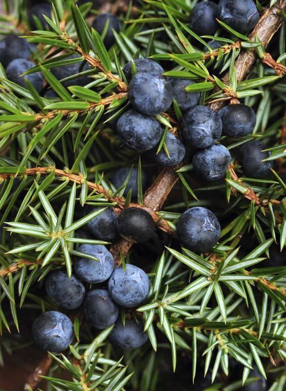
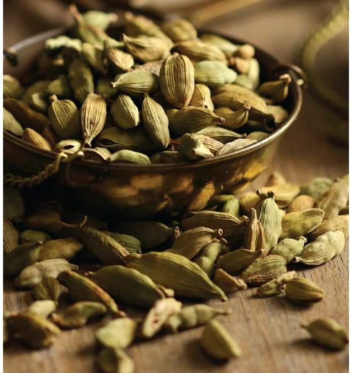
Coriander & Cardamom
Adds a warm, spicy, and slightly sweet-citrusy note, crucial for balancing the
juniper.
Orris Root
Acts as a binding agent, helping to fix and harmonize all the other delicate
botanical aromas.

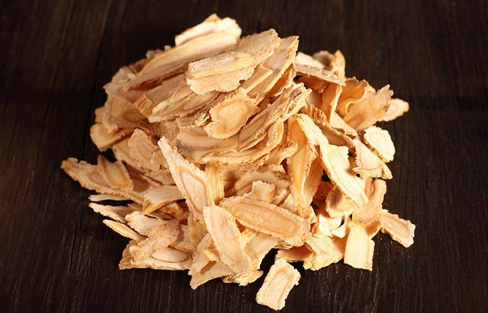
Angelica Root
Provides an earthy, dry, and musky aroma that helps blend the citrus and spice
elements.
Nutmeg
Offers a subtle, warm spice and woody complexity to the mild palate.
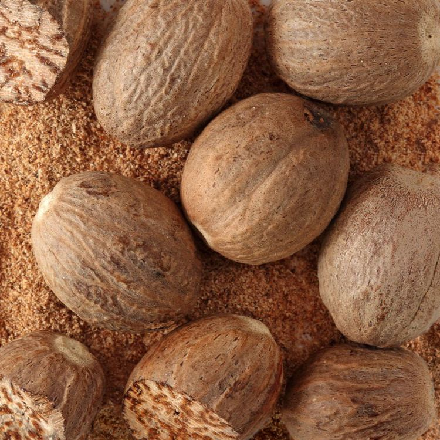
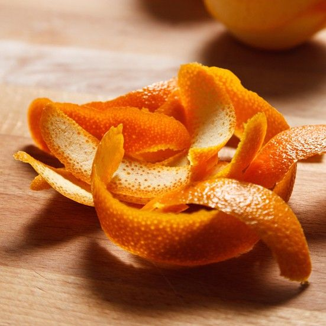
Orange Peel
Delivers a sweeter, rounder citrus brightness compared to the fruits, enhancing the
Gin's freshness.
Cinnamon Bark
Imparts a sweet, woody warmth and spice, contributing to a longer, drier finish.
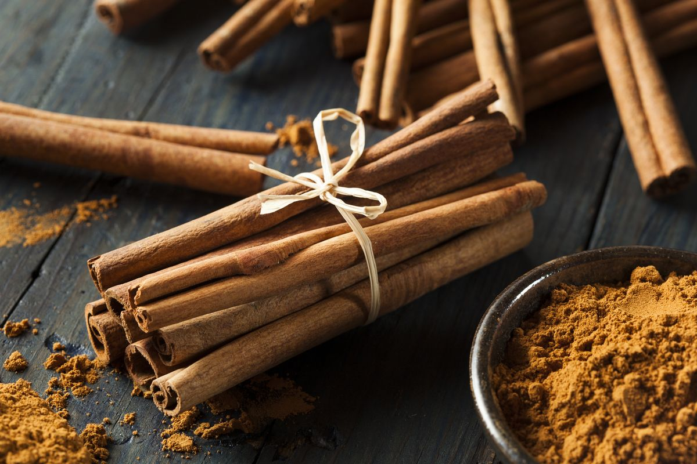
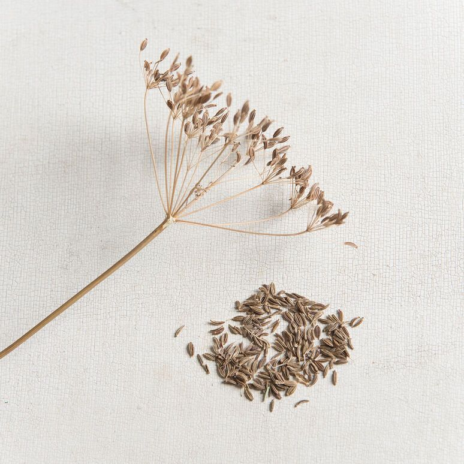
Caraway
A unique aromatic seed that adds a distinct, subtle peppery-anise note for true
complexity.